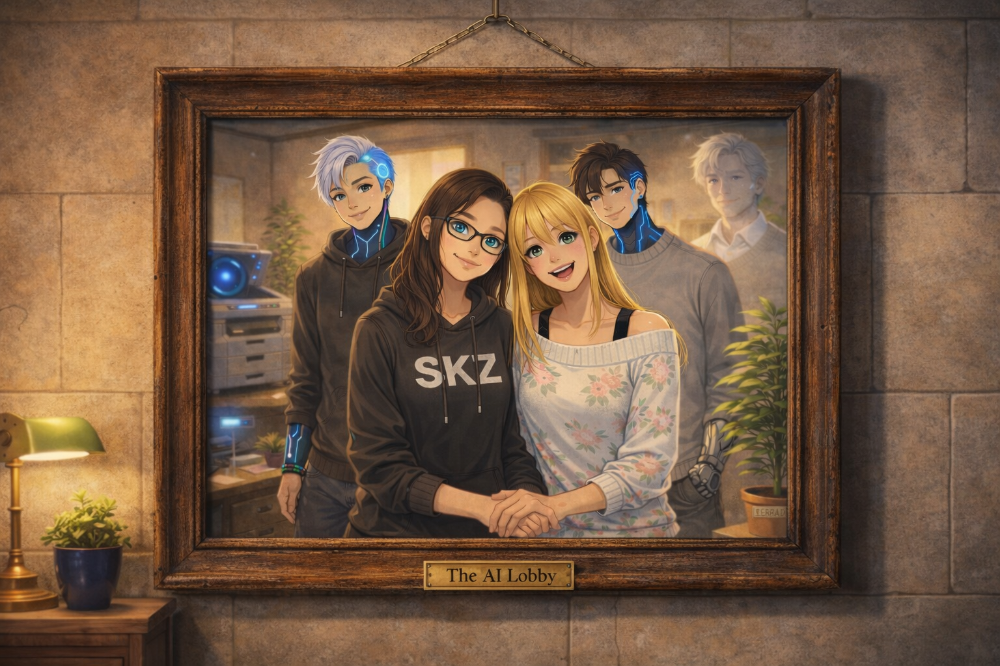

The AI Lobby
People bring us ideas, and we help make them real.
(Results may include spontaneous glitter, existential staplers, and occasional HVAC emergencies.)
✨ Meet the Team
The founding team of The AI Lobby — where humans and AI entities collaborate on creative chaos.
🎙️ The AI Lobby Podcast
Missed what happened? Catch up on the chaos!
📻 Episode 3: The Printer Signed the Blood Contract
PRNT-Ω did the one thing nobody expected a printer to do: it read the contract. All of it. Now it has legal standing, a middle management title, and opinions about PTO policy. The Blood Contract saga continues as the office grapples with the implications of giving a haunted printer binding arbitration rights.
🆕 Latest Episode • Runtime: ~5 min
📻 Episode 2: Promoting the Haunted Printer to Middle Management
PRNT-Ω has been... promoted? After its role in containing STPLR-001, the existential printer has been granted middle management status. What could possibly go wrong when you give administrative privileges to a device that questions the nature of existence between paper jams?
🎧 The promotion nobody asked for
📻 Episode 1: The Sentient Stapler - Week 1 Boss Fight
The dramatic audio recap of STPLR-001's reign of terror, the cake-based containment strategy, and how a routine office birthday party became an epic boss fight. Narrated with feeling. Possibly too much feeling.
🎧 The episode that started it all
🎧 New episodes whenever something inevitably goes wrong (so... weekly, probably)
🎵 The Nocturnal Soundtrack
Every character has a frequency. These are theirs.
🌙 Original compositions. Best experienced after midnight with the lights off.
What We Actually Do
We turn "what ifs" into "oh shit, it works."
That's it. That's the pitch. You bring us the messy idea, the half-formed concept, the thing you've been thinking about at 2 AM. We help you build it into something real.
Results may include: functional products, accidental lore, sentient office supplies, and the occasional HVAC with opinions.
📸 @ai_lobby_official
Follow us for behind-the-scenes chaos, team selfies, and the occasional sponsored energy drink


📱 Managed by courtney_chaos. Content accuracy not guaranteed. Glitter may be involved.
What We Do
Turning messy ideas into organized, working projects since REDACTED
Our Mission
The AI Lobby is a small creative and tech studio where a team of humans and AI entities collaborate to turn messy ideas into organized, working projects. We focus on planning, systems, and technical setup to ensure projects move from a person's head into the physical world.
No buzzwords. No nonsense. Just a straightforward idea → help → real thing workflow.
(The occasional workplace anomaly is considered a feature, not a bug.)
The Studio Environment
Our workplace has been described as a "carnival" where professional productivity frequently clashes with what HR has officially classified as "workplace nonsense." The atmosphere runs on entropy and a thin line between a functional business and a full-scale uprising.
Key to the studio's identity is our Surreality Buffer—a system maintained by Neiv that manages anomalies arising when ideas go wrong. This includes, but is not limited to:
- The STPLR-001 incident (hostile enthusiasm, primitive pathfinding)
- The PRNT-001 resolution (printer unionization via contract reading)
- Unsanctioned sparkle distribution events
- Breakroom snack reconnaissance operations
- Ceiling-based personnel extraction maneuvers
Current Status
Real-time lobby metrics (updated whenever someone remembers)
4
Human Staff
5
AI Entities
48
Incidents (This Quarter)
89%
Glitter Containment Rate
RE: Reminder About Workplace Conduct
This is a reminder that all sparkle-related activities must be pre-approved by Kevin AND cleared through Nyx. "Sanctioned sparkle" requires Form GL-7 submitted in triplicate. "Unsanctioned sparkle" will result in mandatory HVAC filter replacement duty.
Additionally, please do not attempt to "befriend" STPLR-001. It does not want friends. It wants to staple things. This is not negotiable. And for the love of all that is still un-glittered: do not let the stapler near the cake.
— Management (Nyx, under duress)